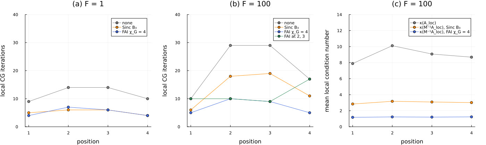

Solver statistics
A DMRG-type solver never sees the global operator: at every step it solves a small local problem, the projection $A_{\text{loc}} = U^\top A U$ of the operator onto the current cores (Sec. 2.1 of Torrente et al., Factorized approximate inverse preconditioners in the tensor train format, "the paper"). The cost of a solve, and the effect of a preconditioner, are therefore decided locally, and they vary along the tensor train. The guiding idea of this tutorial is to measure them where they arise: for every local solve, we record its number of iterations, the condition numbers of its operator with and without preconditioner, and the signs of their eigenvalues. DifferenTT collects these statistics through the stores of LocalUpdaterArgs, which cost nothing unless they are attached.
We use the anisotropic diffusion problem of Sec. 5.1, whose distance from a separable operator we can tune, and proceed as follows. We first build the operator and compare, densely, the Sinc and the FAI preconditioners against the floor of the separable preconditioners. We then record the local iterations of MALS site by site, as in Fig. 11 of the paper (KrylovSweepStats), and the local condition numbers (KrylovCondStats). Next, we diagnose an indefinite preconditioner with KrylovSpectrumStats and the spd_tol check. Finally, we restrict the preconditioner to some of the local problems with preconditioner_sites.
using DifferenTT
using ITensors, ITensorMPS
using LinearAlgebra
using Plots
using Printf
using StableRNGs
ITensors.disable_warn_order()The anisotropic diffusion problem
For operators of Kronecker-sum form, $\mathcal{L}_0 = \sum_\ell \mathcal{A}_\ell$, the Sinc quadrature $B_M$ of Eq. (26) (Khoromskij, 2009) is an approximate inverse that needs no solve: a sum of $2M + 1$ Kronecker products of matrix exponentials, SPD by construction and of bond dimension at most $2M + 1$ (sincquadrature_preconditioner). In order to test it, and the FAI, away from this ideal case, Sec. 5.1 of the paper solves the anisotropic diffusion equation of Eq. (27),
\[-\nabla \cdot (K \nabla u) = 1 \quad \text{in } (0, 1)^N, \qquad u = 0 \quad \text{on the boundary}, \qquad K = (1 - \rho)\, \mathbb{I} + \rho\, \mathbf{1}\mathbf{1}^\top,\]
whose equicorrelated diffusion tensor $K$ couples every pair of dimensions through mixed derivatives. Its discretization $\mathcal{L}(\rho)$ (Eq. (28)) is an MPO of bond dimension 3 (equicorrelated_laplacian), and it satisfies $\lambda_{\min}(K) \mathcal{L}_0 \preceq \mathcal{L}(\rho) \preceq \lambda_{\max}(K) \mathcal{L}_0$, where $\mathcal{L}_0 = -\Delta_h$. Any preconditioner that approximates $\mathcal{L}_0^{-1}$, such as $B_M$, is therefore bound by the floor of Eq. (30),
\[\kappa(\mathcal{L}_0^{-1}\mathcal{L}) \le F = \frac{1 + (N-1)\rho}{1 - \rho},\]
while the FAI, built from $\mathcal{L}(\rho)$ itself, is not. We take $N = 5$ dimensions in the (non-quantized) TT format, with $n = 4$ interior nodes per dimension, so that the $4^5 = 1024$ unknowns allow dense checks, homogeneous Dirichlet conditions, the second-order stencils and the spacing $h = 1/(n + 1)$ of interior_grid, as in Appendix A. We compare the two extreme values of the paper, $F = 1$ (the Laplacian) and $F = 100$, with $\rho$ from Eq. (32).
N, n = 5, 4
arch = TTArchitecture(ntuple(_ -> n, N))
sites = siteinds(arch)
grid = interior_grid(arch, ntuple(_ -> 1.0, N))
dirichlet = BoundaryCond1d(DirichletBC(0.0), DirichletBC(0.0))
field = ScalarField(sites, arch, BoundaryConditions(ntuple(_ -> dirichlet, N)...))
Fs = [1.0, 100.0]
ρs = Dict(F => (F - 1) / (F + N - 1) for F in Fs)
𝓛 = Dict(F => -1.0 * equicorrelated_laplacian(field, grid; correlation=ρs[F], stencil_order=2) for F in Fs)
maxlinkdim.(getindex.(Ref(𝓛), Fs))2-element Vector{Int64}:
2
3The one-dimensional operators $\mathcal{A}_\ell$ of $B_M$ are those of the non-exported onedim_differential_operator, scaled by $-1/h^2$. With $M = 3$ quadrature points on each side, $B_3$ has bond dimension 7, the value that already reaches the floor in the experiments of Sec. 5.1. The FAI is built as in Sec. 5.1: $\mu = 10^7$, 10 MALS sweeps at a local tolerance of $10^{-5}$, stopped at a residual of $10^{-1}$ of Eq. (22), and $\chi_{G_L} = 4$, the smallest bond dimension of the paper.
𝒜 = -DifferenTT.onedim_differential_operator(2, arch, 1, dirichlet; stencil_order=2) ./ grid.dx[1]^2
B3 = sincquadrature_preconditioner(arch, sites, fill(𝒜, N), 3)
fai_build = ResidualALS(;
sweep_kwargs=SweepingArgs(; nsweeps=10, maxdim=4, cutoff=0.0),
updater_kwargs=LocalUpdaterArgs(; ishermitian=true, isposdef=true, rtol=1e-5, krylovdim=1, maxiter=2000),
residual_tol=1e-9,
)
fai = Dict(
F => fai_preconditioner(𝓛[F]; μ=1e7, solver=fai_build, totalmaxdim=4, residual_tol=0.1, rng=StableRNG(1)) for
F in Fs
)
maxlinkdim(B3.operator), maxlinkdim(fai[100.0].operator)(7, 4)We now compute the condition numbers densely. The products $\mathcal{L}_0^{-1}\mathcal{L}$ and $B_3 \mathcal{L}$ are similar to symmetric matrices, so their eigenvalues are those of the symmetric generalized problems $\mathcal{L}\mathbf{v} = \lambda \mathcal{L}_0 \mathbf{v}$ and $\mathcal{L}\mathbf{v} = \lambda B_3^{-1} \mathbf{v}$, and that of the FAI is the condition number of $G_L \mathcal{L} G_L^\top$.
κ(λ) = maximum(λ) / minimum(λ)
L0d = contract_mpo(-1.0 * symmetrized_laplacian(field, grid; stencil_order=2))
B3inv = inv(contract_mpo(B3.operator))
for F in Fs
Ld = contract_mpo(𝓛[F])
G = contract_mpo(fai[F].operator)
@printf(
"F = %5.1f (ρ = %.4f): κ(𝓛) = %4.1f, floor κ(𝓛₀⁻¹𝓛) = %.2f, κ(B₃𝓛) = %.2f, κ(GᵀG𝓛) = %.2f\n",
F,
ρs[F],
κ(eigvals(Symmetric(Ld))),
κ(eigvals(Symmetric(Ld), Symmetric(L0d))),
κ(eigvals(Symmetric(Ld), Symmetric(B3inv))),
κ(eigvals(Symmetric(G * Ld * G')))
)
endF = 1.0 (ρ = 0.0000): κ(𝓛) = 9.5, floor κ(𝓛₀⁻¹𝓛) = 1.00, κ(B₃𝓛) = 1.09, κ(GᵀG𝓛) = 1.04
F = 100.0 (ρ = 0.9519): κ(𝓛) = 16.1, floor κ(𝓛₀⁻¹𝓛) = 4.58, κ(B₃𝓛) = 4.50, κ(GᵀG𝓛) = 1.28For $F = 1$, $\mathcal{L} = \mathcal{L}_0$ is separable, and both preconditioners are close to the exact inverse. For $F = 100$, the discrete floor is about 4.6, far below the analytic bound of 100, since this coarse grid does not resolve the extreme modes of $K$ (as in Table 1 of the paper), and $B_3$ sits on it: more quadrature terms bring $\kappa(B_M \mathcal{L}_0)$ closer to 1, but not $\kappa(B_M \mathcal{L})$ below the floor (Eq. (31)). The FAI goes below the floor with a bond dimension of only 4.
Local iterations site by site
A KrylovSweepStats, passed as numiter_store, records the iteration count of every local solve, by the first site of its local problem (its position), by sweep and by visit: a two-site sweep visits the $N - 1 = 4$ positions forward and backward, so each position is solved twice per sweep. positions_sum, which is not exported, and positions_mean reduce them per position. We solve with MALS and the settings of Sec. 5.1: sweeps stopped at a relative residual of $10^{-5}$, a singular value cutoff of $10^{-13}$, local CG to a relative tolerance of $10^{-6}$, the right-hand side $f \equiv 1$ (ones_mps) and a seeded random initial guess.
b = ones_mps(sites)
x0 = random_mps(StableRNG(3), sites)
function mals(op, preconditioner, rhs, guess; kwargs...)
solver = ResidualALS(;
sweep_kwargs=SweepingArgs(; nsweeps=10, maxdim=64, cutoff=1e-13, (observer!)=ResidualObserver(; rtol=1e-5)),
updater_kwargs=LocalUpdaterArgs(;
ishermitian=true, isposdef=true, rtol=1e-6, krylovdim=1, maxiter=3000, kwargs...
),
residual_tol=0.5e-5,
)
if isnothing(preconditioner)
return linearsolve(solver, op, rhs, guess)
end
return linearsolve(solver, op, rhs, preconditioner, guess)
end
variants = ["none", "Sinc B₃", "FAI χ_G = 4"]
preconditioner_of(F, method) =
if method == "none"
nothing
elseif method == "Sinc B₃"
B3
else
fai[F]
end
iterations = Dict{Tuple{Float64,String},Vector{Float64}}()
for F in Fs, method in variants
numiter = KrylovSweepStats()
x = mals(𝓛[F], preconditioner_of(F, method), b, x0; numiter_store=numiter)
iterations[(F, method)] = DifferenTT.positions_sum(numiter)
@printf(
"F = %5.1f, %-12s iterations per position %-26s total %3d, sweeps %d, χ(x) = %d\n",
F,
method,
string(Int.(iterations[(F, method)])),
sum(iterations[(F, method)]),
length(numiter.numiters[1]),
maxlinkdim(x)
)
endF = 1.0, none iterations per position [9, 14, 14, 10] total 47, sweeps 1, χ(x) = 3
F = 1.0, Sinc B₃ iterations per position [5, 6, 6, 4] total 21, sweeps 1, χ(x) = 3
F = 1.0, FAI χ_G = 4 iterations per position [4, 7, 6, 4] total 21, sweeps 1, χ(x) = 3
F = 100.0, none iterations per position [10, 29, 29, 17] total 85, sweeps 1, χ(x) = 10
F = 100.0, Sinc B₃ iterations per position [6, 18, 19, 11] total 54, sweeps 1, χ(x) = 10
F = 100.0, FAI χ_G = 4 iterations per position [5, 10, 9, 5] total 29, sweeps 1, χ(x) = 10Every solve reaches the tolerance in one sweep, as in the paper, where every run needs at most two. For $F = 1$, both preconditioners bring the iterations of every position down to less than half of the baseline. For $F = 100$, the iterations peak at the central positions for every method, since the central local problems are projections onto the largest subspaces and inherit more of the conditioning of the global operator (Sec. 5.1). There, $B_3$ saves about a third of the iterations and the FAI two thirds, the behavior of Fig. 11 of the paper in miniature.
Local condition numbers
The iteration counts follow from the condition numbers of the local problems. A KrylovCondStats passed as cond_store records $\kappa(A_{\text{loc}})$ of every local problem, and one passed as pc_cond_store records $\kappa(M^{-1}_{\text{loc}} A_{\text{loc}})$ in a preconditioned solve; positions_mean_cond averages them per position. Both diagonalize the dense local blocks, at a cost of $\mathcal{O}(n_{\text{loc}}^3)$, so they are meant for small diagnostic runs like this one. We record both in the preconditioned solves of $F = 100$:
local_κ = Dict{String,Vector{Float64}}()
for method in variants[2:3]
cond_store, pc_cond_store = KrylovCondStats(), KrylovCondStats()
mals(𝓛[100.0], preconditioner_of(100.0, method), b, x0; cond_store, pc_cond_store)
local_κ["A_loc ($method run)"] = positions_mean_cond(cond_store)
local_κ[method] = positions_mean_cond(pc_cond_store)
end
for name in ["A_loc (Sinc B₃ run)", "A_loc (FAI χ_G = 4 run)", variants[2:3]...]
@printf("%-24s %s\n", name, join((@sprintf("%6.2f", v) for v in local_κ[name]), " "))
endA_loc (Sinc B₃ run) 7.89 10.12 9.08 8.69
A_loc (FAI χ_G = 4 run) 7.89 10.12 9.08 8.69
Sinc B₃ 2.84 3.18 3.09 3.02
FAI χ_G = 4 1.18 1.23 1.20 1.24The local operators have condition numbers between 8 and 10, below $\kappa(\mathcal{L}) \approx 16$, since their spectra lie within the global one; they agree in both runs to the digits shown, since the local solutions that define the projections agree up to the CG tolerance. The preconditioned local operators follow the global picture: $B_3$ brings their condition numbers to about 3 and the FAI to about 1.2.
Diagnosing an indefinite preconditioner
CG requires an SPD preconditioner, and a truncated approximate inverse is not guaranteed to be one (Fig. 3 of the paper and the previous tutorial). On the grid above, the exact inverse of $\mathcal{L}$ for $F = 100$, truncated by successive SVDs (mat2mpo) to any bond dimension from 2 to 5, happens to stay definite. The tolerance $1/\kappa$ for definiteness tightens as the grid is refined, so we move to $n = 5$ nodes per dimension (3125 unknowns), where the truncation to bond dimension 2 has two negative eigenvalues:
fine_arch = TTArchitecture(ntuple(_ -> 5, N))
fine_sites = siteinds(fine_arch)
fine_grid = interior_grid(fine_arch, ntuple(_ -> 1.0, N))
fine_field = ScalarField(fine_sites, fine_arch, BoundaryConditions(ntuple(_ -> dirichlet, N)...))
fine_𝓛 = -1.0 * equicorrelated_laplacian(fine_field, fine_grid; correlation=ρs[100.0], stencil_order=2)
fine_𝓛d = contract_mpo(fine_𝓛)
truncated = Preconditioner(mat2mpo(inv(fine_𝓛d), fine_sites; maxdim=2, cutoff=0.0))
Pd = contract_mpo(truncated.operator)
λP = eigvals(Symmetric((Pd + Pd') / 2))
count(<(-length(λP) * eps() * maximum(abs, λP)), λP)2A KrylovSpectrumStats passed as spectrum_store records, for every local solve, the extreme eigenvalues of the symmetric parts of $A_{\text{loc}}$ and $M^{-1}_{\text{loc}}$, the number of negative ones, and the spectrum of the preconditioned operator. The local blocks are congruences $U^\top M^{-1} U$ of the global $M^{-1}$, so by Sylvester's law of inertia a negative eigenvalue of a local block certifies that the global preconditioner is not positive definite. The converse does not hold, since a positive block only shows that $M^{-1}$ is positive on the span of $U$. spectrum_table returns the records column by column:
fine_b = ones_mps(fine_sites)
fine_x0 = random_mps(StableRNG(3), fine_sites)
spectrum = KrylovSpectrumStats()
x = mals(fine_𝓛, truncated, fine_b, fine_x0; spectrum_store=spectrum)
table = spectrum_table(spectrum)
for k in eachindex(table["position"])
@printf(
"sweep %d, position %d: λ_min(M⁻¹_loc) = %9.2e, negative eigenvalues of M⁻¹_loc: %d, of M⁻¹A_loc: %d\n",
table["sweep"][k],
table["position"][k],
table["eigmin_P"][k],
table["nneg_P"][k],
table["nneg_PA"][k]
)
end
@printf("relative residual of the solution: %.1e\n", norm(fine_𝓛d * contract_mps(x) .- 1) / sqrt(5^N))sweep 1, position 1: λ_min(M⁻¹_loc) = 2.25e-03, negative eigenvalues of M⁻¹_loc: 0, of M⁻¹A_loc: 0
sweep 1, position 2: λ_min(M⁻¹_loc) = 1.51e-03, negative eigenvalues of M⁻¹_loc: 0, of M⁻¹A_loc: 0
sweep 1, position 3: λ_min(M⁻¹_loc) = 2.27e-03, negative eigenvalues of M⁻¹_loc: 0, of M⁻¹A_loc: 0
sweep 1, position 4: λ_min(M⁻¹_loc) = 1.95e-03, negative eigenvalues of M⁻¹_loc: 0, of M⁻¹A_loc: 0
sweep 1, position 4: λ_min(M⁻¹_loc) = 1.95e-03, negative eigenvalues of M⁻¹_loc: 0, of M⁻¹A_loc: 0
sweep 1, position 3: λ_min(M⁻¹_loc) = 6.31e-04, negative eigenvalues of M⁻¹_loc: 0, of M⁻¹A_loc: 0
sweep 1, position 2: λ_min(M⁻¹_loc) = -7.35e-04, negative eigenvalues of M⁻¹_loc: 2, of M⁻¹A_loc: 2
sweep 1, position 1: λ_min(M⁻¹_loc) = -4.72e-04, negative eigenvalues of M⁻¹_loc: 2, of M⁻¹A_loc: 2
relative residual of the solution: 7.0e-07The last two local blocks of the sweep carry the two negative eigenvalues, which certifies the indefiniteness of the global preconditioner from local information alone. Note that CG still converged here: an indefinite preconditioner removes the guarantee of convergence rather than causing a failure every time, which is why it can go unnoticed. The keyword spd_tol makes the check strict. It stops the solve with a NotSPDError at the first local problem whose $A_{\text{loc}}$ or $M^{-1}_{\text{loc}} A_{\text{loc}}$ has an eigenvalue with real part below $-\texttt{spd\_tol} \max|\lambda|$, and requires the CG flags ishermitian and isposdef:
message = try
mals(fine_𝓛, truncated, fine_b, fine_x0; spd_tol=1e-8)
"no error"
catch e
sprint(showerror, e)
end
println(message)NotSPDError: Preconditioned operator P⁻¹A is not SPD at lpos = 1: min Re λ = -0.4861011174590423, min Re λ / max|λ| = -0.3477661558537474The error names lpos = 1, the number of sites to the left of the local problem, i.e. position 2. It is raised at the visit of position 2 in the backward half-sweep, the first local problem of the table above with a negative eigenvalue.
Preconditioning some of the local problems
The keyword preconditioner_sites of linearsolve restricts the preconditioner to the local problems whose first site is in a given set, and solves the others with $A_{\text{loc}}$ alone. Since the iterations of the anisotropic problem concentrate at the center of the chain, we precondition only positions 2 and 3 with the FAI, and compare with the full and the absent preconditioner:
numiter = KrylovSweepStats()
solver = ResidualALS(;
sweep_kwargs=SweepingArgs(; nsweeps=10, maxdim=64, cutoff=1e-13, (observer!)=ResidualObserver(; rtol=1e-5)),
updater_kwargs=LocalUpdaterArgs(;
ishermitian=true, isposdef=true, rtol=1e-6, krylovdim=1, maxiter=3000, numiter_store=numiter
),
residual_tol=0.5e-5,
)
linearsolve(solver, 𝓛[100.0], b, fai[100.0], x0; preconditioner_sites=[2, 3])
iterations[(100.0, "FAI at 2, 3")] = DifferenTT.positions_sum(numiter)
for method in ["none", "FAI χ_G = 4", "FAI at 2, 3"]
@printf(
"%-12s %-26s total %d\n", method, string(Int.(iterations[(100.0, method)])), sum(iterations[(100.0, method)])
)
endnone [10, 29, 29, 17] total 85
FAI χ_G = 4 [5, 10, 9, 5] total 29
FAI at 2, 3 [10, 10, 9, 17] total 46The central positions take the iterations of the fully preconditioned solve and the end positions those of the baseline, so that about 70 % of the reduction is kept while the end problems avoid the cost of the two layers of $G_L$. Whether this pays off in time depends on the cost balance of Sec. 4 of the paper, $1 + 2\chi_{G_L}/\chi_A$ per preconditioned iteration, here $1 + 8/3 \approx 3.7$.
Summary
The figure shows the local CG iterations per position of the MALS solves, for (a) $F = 1$ and (b) $F = 100$, a miniature of Fig. 11 of the paper, and (c) the mean local condition numbers per position for $F = 100$.
colors = Dict("none" => :gray, "Sinc B₃" => :darkorange, "FAI χ_G = 4" => :royalblue, "FAI at 2, 3" => :seagreen)
positions = 1:(N-1)
panels = map(enumerate(Fs)) do (k, F)
panel = plot(;
xlabel="position",
ylabel="local CG iterations",
title="($('a' + k - 1)) F = $(Int(F))",
xticks=positions,
ylims=(0, 40),
legend=:topright,
)
for method in (F == 100.0 ? [variants; "FAI at 2, 3"] : variants)
plot!(panel, positions, iterations[(F, method)]; label=method, marker=:circle, color=colors[method])
end
panel
end
panel_c = plot(;
xlabel="position",
ylabel="mean local condition number",
title="(c) F = 100",
xticks=positions,
ylims=(0, 14),
legend=:topright,
)
plot!(panel_c, positions, local_κ["A_loc (Sinc B₃ run)"]; label="κ(A_loc)", marker=:circle, color=:gray)
for method in variants[2:3]
plot!(panel_c, positions, local_κ[method]; label="κ(M⁻¹A_loc), $method", marker=:circle, color=colors[method])
end
plot(panels..., panel_c; layout=(1, 3), size=(1400, 420), margin=6Plots.mm)